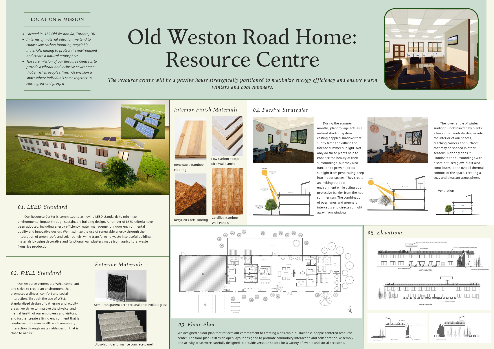
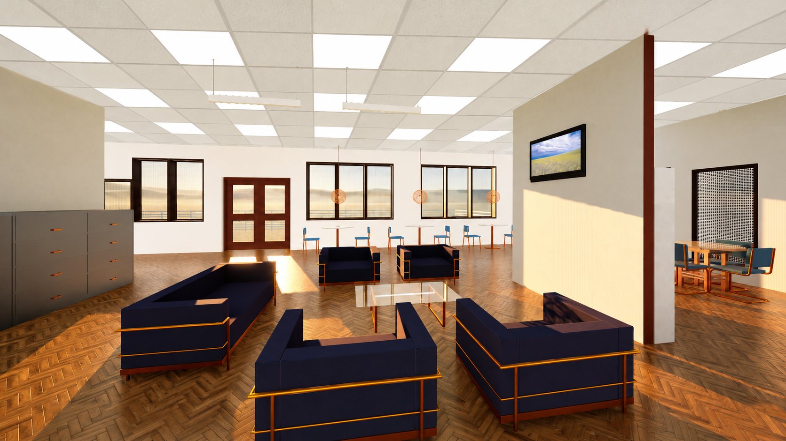

海报内容中文导览
项目位于多伦多 189 Old Weston Road，目标是打造一座被动式社区资源中心，为社区成员提供活动、休息、阅读、课堂与护理支持空间，并通过无障碍卫生间和淋浴设施提升使用便利性。方案倡导低碳与可回收材料，结合 LEED 与 WELL 目标，营造兼顾能源效率、健康、社会交往和环境可持续性的包容空间。海报还概览了绿色屋顶与太阳能板、季节性遮阳和采光策略、室内外饰面材料、功能平面及建筑立面；开放式平面旨在促进社区互动与协作。
项目位于多伦多 Old Weston Road，面向无家可归者提供学习、交流与日常支持空间。设计以被动式建筑为基础，整合 LEED 与 WELL 策略，通过节能、自然环境连接和包容性空间规划，营造温暖、可持续的社区资源中心。

COLLABORATIVE PROJECT / 2023
项目位于多伦多 189 Old Weston Road，目标是打造一座被动式社区资源中心，为社区成员提供活动、休息、阅读、课堂与护理支持空间，并通过无障碍卫生间和淋浴设施提升使用便利性。方案倡导低碳与可回收材料，结合 LEED 与 WELL 目标，营造兼顾能源效率、健康、社会交往和环境可持续性的包容空间。海报还概览了绿色屋顶与太阳能板、季节性遮阳和采光策略、室内外饰面材料、功能平面及建筑立面；开放式平面旨在促进社区互动与协作。
场地位于安大略省多伦多市 189 Old Weston Road。资源中心以可持续社区服务为目标，规划活动、休息、阅读、课堂与护理空间，为无家可归者提供相互连接的学习与支持环境。建筑采用被动式设计理念，兼顾冬季保温、夏季遮阳、无障碍通行以及与周边自然环境的联系。
能源与水资源：采用被动式建筑策略、南向采光、外遮阳、感应 LED、太阳能板、绿色屋顶、保温围护结构及雨水回收；低流量水龙头与淋浴设备减少用水。
健康与室内环境：选用低 VOC、可再生或回收材料，保持室内空气流通，并通过窗景、户外空间和自然景观加强人与自然的连接。WELL 策略聚焦心理健康，设置阅读、课堂及定期教育活动。
材料：图板列出稻壳石灰抹灰、竹地板、回收软木地板、竹墙板、高性能混凝土及半透明光伏玻璃等材料，兼顾耐久、低碳与节能需求。
场地总平面说明建筑、道路、步行与绿化的关系；夏季和冬季日照路径图分析太阳高度变化与建筑朝向。平面布置整合接待、活动、阅读、课堂、护理支持与共享休息区域，以清晰的功能组织支持多样的社区使用方式。
南北立面与东西向剖面展示建筑体量、窗洞、屋顶绿化及室内外关系。夏季剖面说明遮阳与树荫如何减少直射热量；冬季剖面利用较低角度的阳光深入室内；横向通风剖面则呈现空气流动路径。
效果图以季节变化呈现图书馆的日光环境，并展示休息区与绿色屋顶。绿色屋顶结合太阳能板，回应建筑节能、雨水管理与户外环境品质等设计目标。